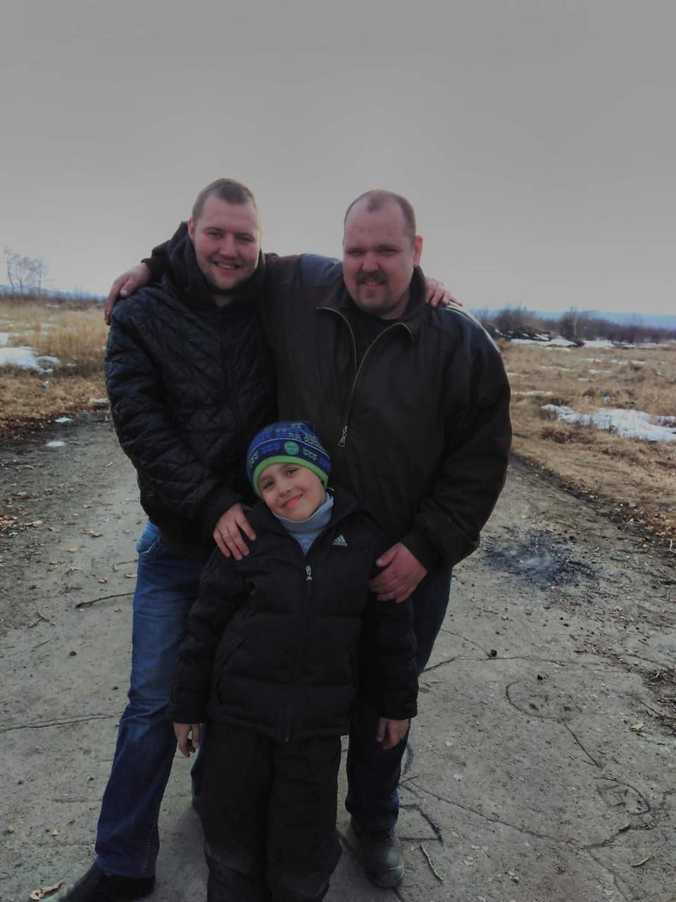
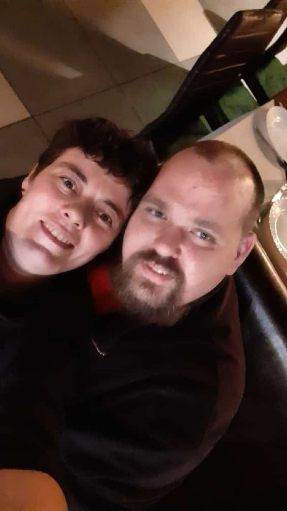
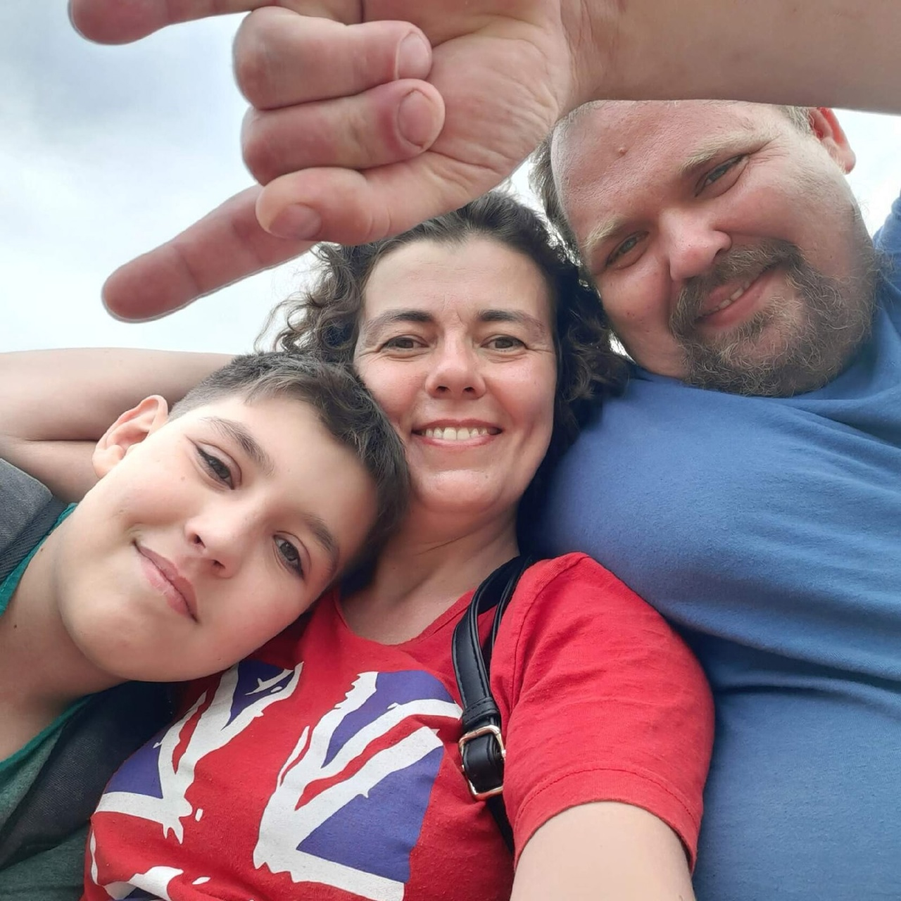
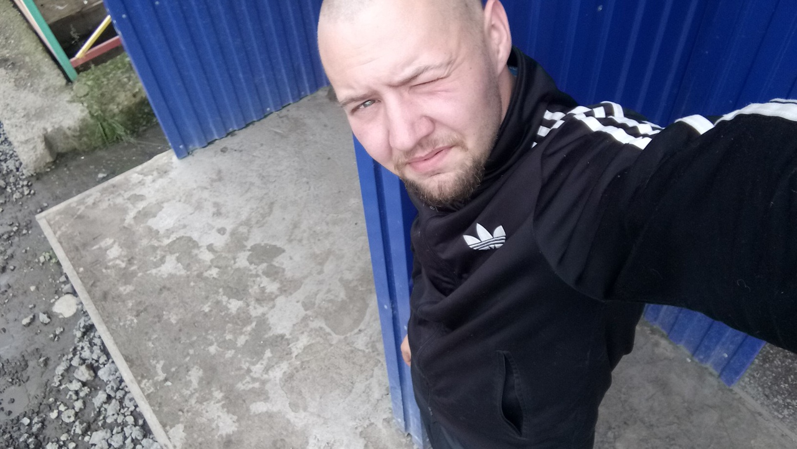

Привет я Глеб мне 13 лет . На фото вы видите меня,моего двоюродного брата,папу.
На фото мне 8 или 7 лет

Появился я на свет в 10 ноября 2009 году
Об моей семье
Жыву в Комсомольске на амуре. Семья состоит из 4 человек:мама,папа,двоюродный брат,я
Маму зовут Лиза. Работает машинистом крана

Папу зовут Коля. Работает ремотником по кранам

(Анегдот:Мама ломает краны,а папа чинит.)
Двоюродного брата зовут Саша. Работает не-знаю кем но ЗП 90к рублей в месяц

История
История начинается на заводе Амурсталь.Папа познокомился с Мамой на проходной. (Я НЕ ЗНАЮ ВСЕ В ДЕТАЛЯХ!)Сперва они жили вместе,потом поженились, но потом оказалось что они не могут завести ребенка,но потом окозалось что возможно но с очень низким шансом , как оказалось я появился жывой здаровый ребенок.
7 лет десткого сада были отличными! Моим любимы воспитателем была Виктория Анотолевна,любимыми игрушками лего а любимым блюдом картошка талченая с катлеткой и еще очень редко готовили рис или плох (я их раньше не отличал) так вот ЭТО ШЕДЕВЕР КУЛИНАРИИ,
потом конешно это стало шаурма а ладно. Потом я пошел в школу и я был кадетом (ненавижу им быть) так вот с 1 класса меня постояно гнабят но в 4 классе я начал бить в морду в 5 и 6 (это пи#дец) полный хардкор дз сложное а если не знаеш 5 класс математики то в 6 будет плохо! Да по русскому легко и еще мне перестала нравится информатика ибо игры не разрешают скачивать а просто сделал задание как показала учитель и даже в папку не сахронил и вышел (Интересно как учитель будет проверять задание).Кстати раз мы начали говорить про компютеры то смотрите у нас во дворе есть "Компютерный клуб Colizeum " это место мне нравится из-а того что за 100 рублей ты можеш поиграть во все что угодно
на пк (если устоновлено).
Ну и еще в городе есть "Батуты на которых надо крутить сальтухи" я не знаю где они находятся но о них разговаривали однокласники.
Ладно что я все о свое да о своем, удачи и хорошего настроения тебе кто это читает.